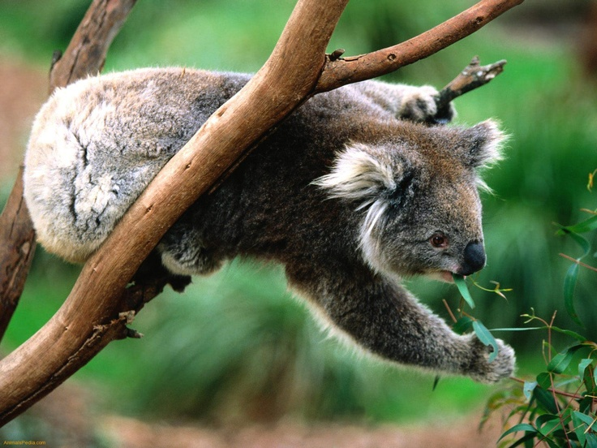
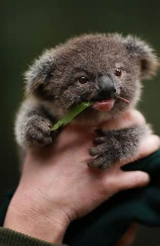
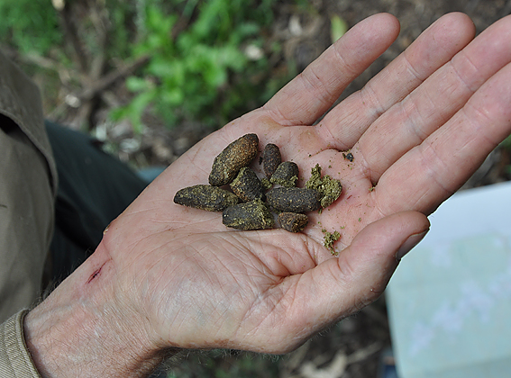
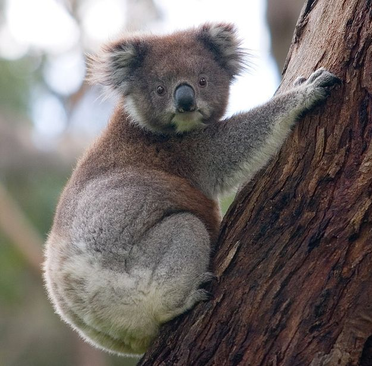

Koala Facts

What do they eat?
Koalas eat 1-1.5 pounds of eucalyptus leaves per day, and because of that they smell like cough drops.

What happens when they get hurt?
If hurt, koalas can cost up to $7000 to treat.
In Queensland alone the number of koalas dropped from 25,000 to 4,000 only in the last decade, due to car and domestic animal accidents, and development.
How long do thay live in the wild?
Koalas live a life span of around 13-18 years in the wild.

How big is a baby koala?
A newborn koala is only the size of a broad bean.

How much do they poop?
Koalas poop 200 times a day, it is small and hard and dry.

Are koalas territorial?
Koalas are territorial animals, the males generally have larger territories.